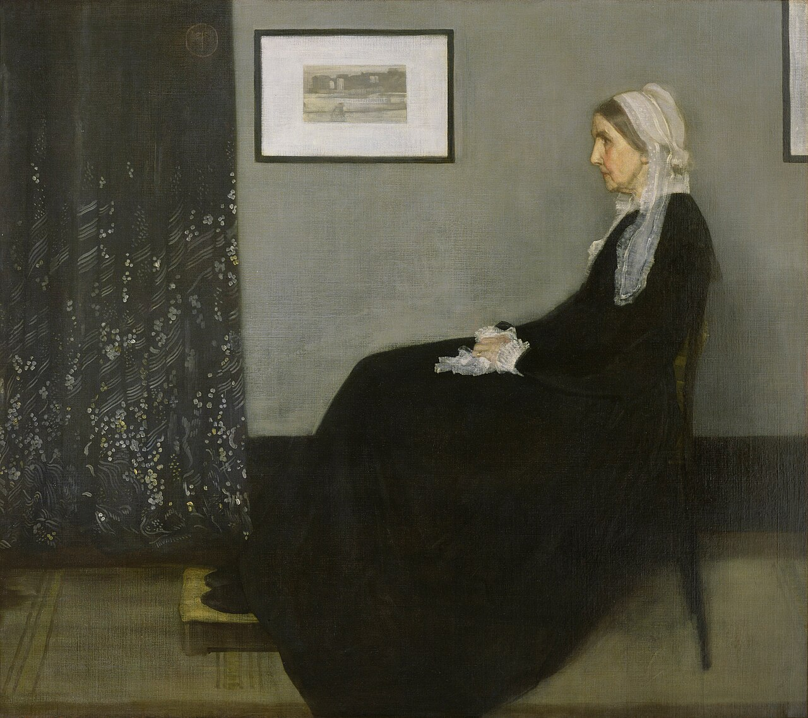
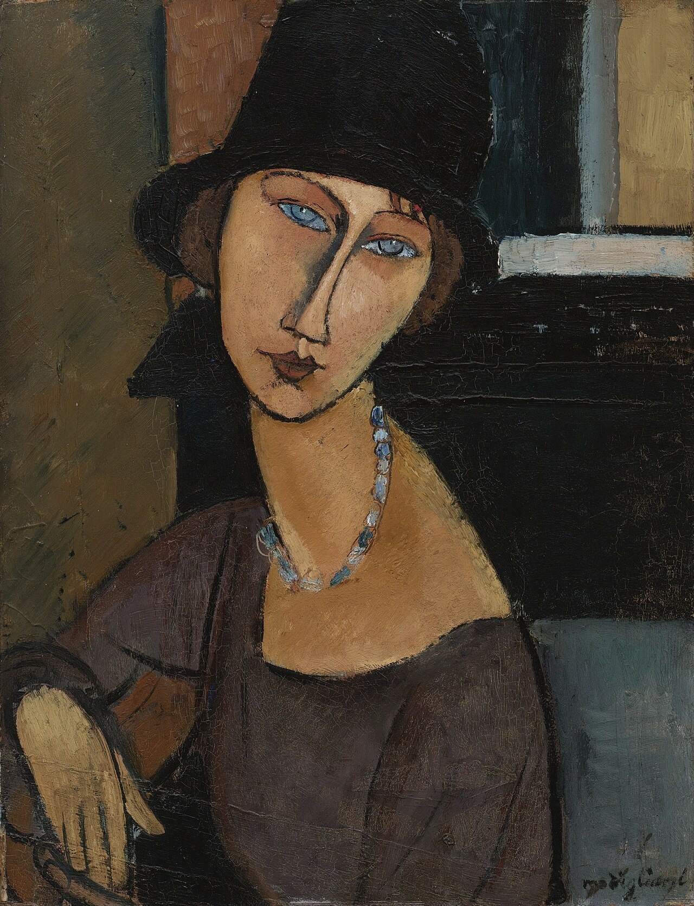
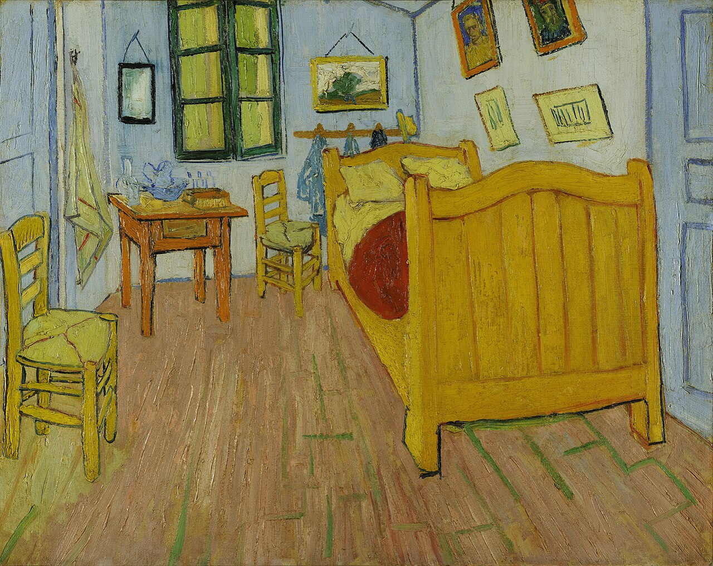

중학교 1학년 미술 · 「다채로운 조형의 맛」 · 교과서 34~37쪽 · 2~3차시
조형 실험실
지난 시간에 조형 요소(재료)와 조형 원리(요리법)의 이름을 배웠어요. 오늘은 직접 바꾸고, 늘리고, 뒤집어 보면서 원리가 작품의 느낌을 어떻게 바꾸는지 실험해요.
- 조형 요소를 바꾸고 배치해 보며 조형 원리의 의미와 효과를 설명할 수 있다.
- 작품 속에서 조형 원리를 찾고, 그렇게 생각한 이유를 근거를 들어 말할 수 있다.
🔍 월리를 찾으려면 무엇이 필요할까요?
월리를 찾으려면 → 월리의 특징을 알아야 해요.
작품 속 조형 원리를 찾으려면 → 조형 원리의 특징을 알아야 해요.
빨간 줄무늬 옷, 둥근 안경, 방울 모자… 특징을 알면 복잡한 그림에서도 금방 찾아요. 조형 원리도 마찬가지예요!
오늘의 실험 순서
- 사과 8개로 원리 7가지 만들기
- 비례를 늘였다 줄였다
- 색과 선을 바꾸면 느낌이?
- 거울처럼 대칭 그리기
- 명화 속 원리 찾고 이유 말하기
사과 8개로 만드는 조형 원리
미션을 고르고, 붓(색 + 크기)을 정한 뒤 사과를 눌러 바꿔 보세요. 조건을 맞추면 자동으로 알려 줘요.
💡 한 줄에서 원리가 여러 개 함께 보일 수도 있어요. 성공하면 함께 보이는 원리도 알려 줄게요.
얼굴과 목, 길이를 바꾸면?
비례는 부분과 전체, 부분과 부분 사이의 상대적인 크기 관계예요.


직접 늘려 보기
📏 다빈치의 〈비트루비우스적 인간〉은 인체의 이상적인 비례를 연구한 그림이에요. 화가는 이렇게 비례를 정확히 지키기도 하고, 모딜리아니처럼 일부러 변형해서 감정을 드러내기도 해요. 교과서 32쪽 생팔의 〈거대한 얼굴〉도 실제 얼굴과 비례가 맞지 않지요!
조형 요소가 달라지면, 느낌도 달라질까?
같은 그림이라도 재료(색, 선)를 바꾸면 전혀 다른 맛이 나요.

🎨 색 바꾸기
고흐는 동생에게 이 방이 ‘완전한 휴식’을 느끼게 하길 바란다고 편지를 썼어요. 버튼을 눌러 색을 바꿔 보세요. 그 느낌이 그대로 남아 있나요?
✏️ 선 바꾸기
같은 방을 선만 바꿔 그려 봤어요. 선의 굵기, 방향, 떨림에 따라 어떤 느낌이 드나요? (교과서 34쪽: “선의 굵기와 방향, 그리는 속도를 바꿔 보세요.”)
🖼 리히텐슈타인은 1992년에 고흐의 〈아를의 침실〉을 굵고 단순한 검은 선과 만화 같은 색으로 다시 그렸어요. 선생님 화면이나 교과서 자료로 원작과 비교해 보세요.
아름다운 조형의 비밀, 대칭
대칭은 축을 기준으로 서로 같은 모습으로 마주 보며 짝을 이룬 상태예요. 한쪽에만 그려도 반대쪽이 저절로 그려져요.
🙂 사람의 얼굴은 좌우 대칭이에요. ‘좌우 대칭’으로 친구 얼굴의 한쪽만 그려 보세요. 다음 시간에 색지를 반으로 접어 오려 내는 친구 초상화(교과서 37쪽)의 연습이 돼요.
수행 활동 ① 알파벳 속 대칭
‘A, M, T, U, V, W, Y’는 좌우 대칭, ‘B, C, D, E, K’는 상하 대칭이에요. 그렇다면 이 글자들은?
수행 활동 ② 우리 주변의 대칭
꽃, 나비, 타지마할, 〈일월오봉도〉… 대칭은 예측 가능한 질서로 안정감을 줘요. 우리 주변에서 대칭을 이루는 것을 찾아 써 보세요.
명화 속 조형 원리를 찾아라!
정답은 하나가 아니에요. 대신 왜 그렇게 생각했는지 이유를 꼭 들어서 설명해야 해요.
오늘의 정리
형성평가로 확인하고, 내 기록을 복사하거나 인쇄해 제출하세요.
형성평가 ① 원리와 설명 짝짓기
형성평가 ② O, X
색지를 반으로 접고 친구 얼굴의 한쪽만 그려 오려 내는 대칭 친구 초상화를 만들어요(교과서 37쪽). 준비물: 색지, 가위, 풀, 필기도구